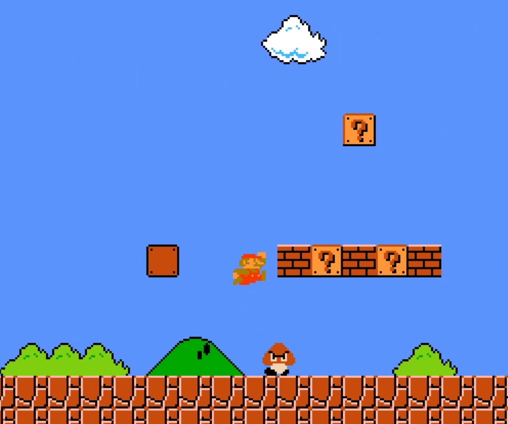
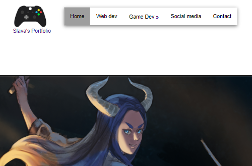
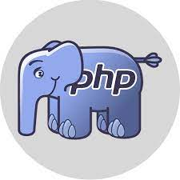

Wat doe ik allemaal bij web development?
Bij de eerste paar modules heb ik kennis gemaakt met HTML5 en CSS. Waar het belang in lag bij deze module,
was het gebruik van moderne technieken. Hierbij gaat het over responsieve web paginas maken met behulp van CSS media queries.
Media queries zijn CSS syntax waarbij we de browser afvragen in welke resolutie onze pagina wordt getoond. Denk hierbij aan portet of landschap modus.
Deze zijn van belang bij mobieltjes en tablets. Ook laptops kunnen hier gebruik van maken. Natuurlijk komen er ook groter scherm formaten erbij kijken.
Bijvoorbeeld tv-schermen die 4K bereiken. Hierdoor moet onze web pagina goed getoond worden en leesbaar zijn ongeacht de resolutie.
Hoe ben ik ermee begonnen?

Middelbare school
Op mijn middelbare school hadden we een vak genaamd informatica, waarbij we ons verdiepte in vakken zoals PHP,
python en websites maken.
Doordat ik enorm veel interesse had in programmeren kwam ik snel achter dat ik hiermee iets wilde bereiken. Daardoor had ik me aangemeld als student bij BUAS.
Naast mijn HBO studie volg ik deze opleiding aan het LOI.

Deze Portfolio website
Deze pagina waar je nu zit te kijken via de browser, is één van de opdrachten die ik heb gemaakt. Als je benieuwd bent wat hier achter zit, lees maar verder.
De gehele website is gemaakt in simpele HTML en CSS. Er is geen PHP of een andere framework hierachter.
Dit kost natuurlijk veel meer tijd dan je verwacht.
Frameworks of het gebruik van JavaScript en PHP versnelt het maken van zulke websites. Dat komt door het feit dat veel voor gemaakt stijlen en samenstellingen van weergaves beschikbaar zijn voor je.

Waar ga ik verder aan werken?
Het volgende module waar ik aan ga werken in deze opleiding is PHP met MySQL. De uitendelijke opdracht is om een website te maken waarbij MVC de basis is.
Model View Controller, MVC, is a methodiek waar de progammeur verantwoordelijkheid verdeeld onder drie hokjes. De model houdt de informatie bij. De view weergeeft bepaalde data.
De controller houdt zich bezig met waarmee de gebruiker interacties uitvoert. Hierdoor is het makkelijker om over een website te denken en te implementeren.